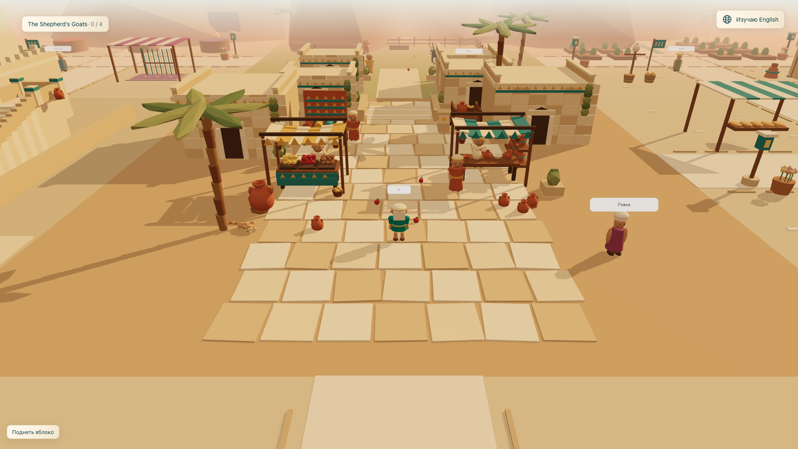
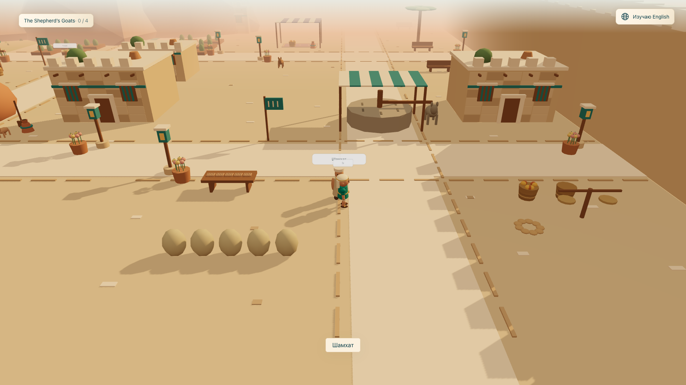
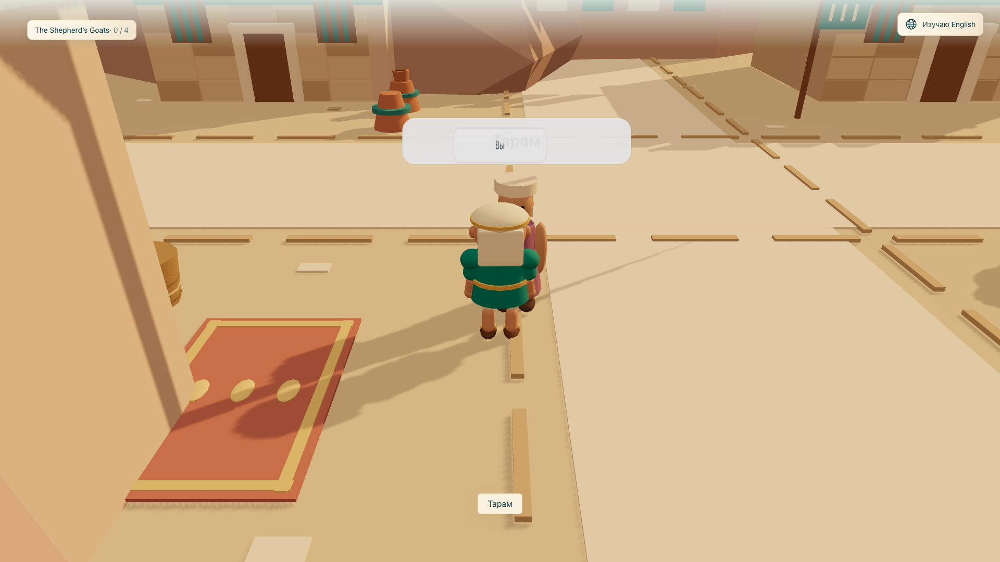
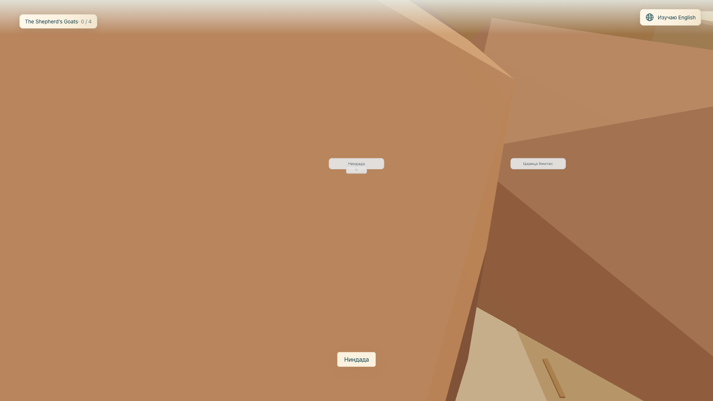
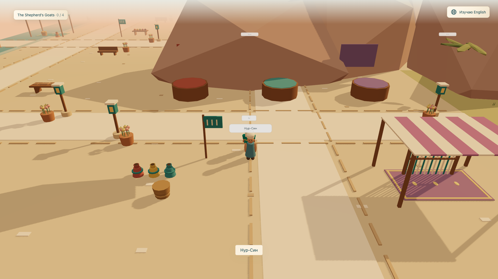
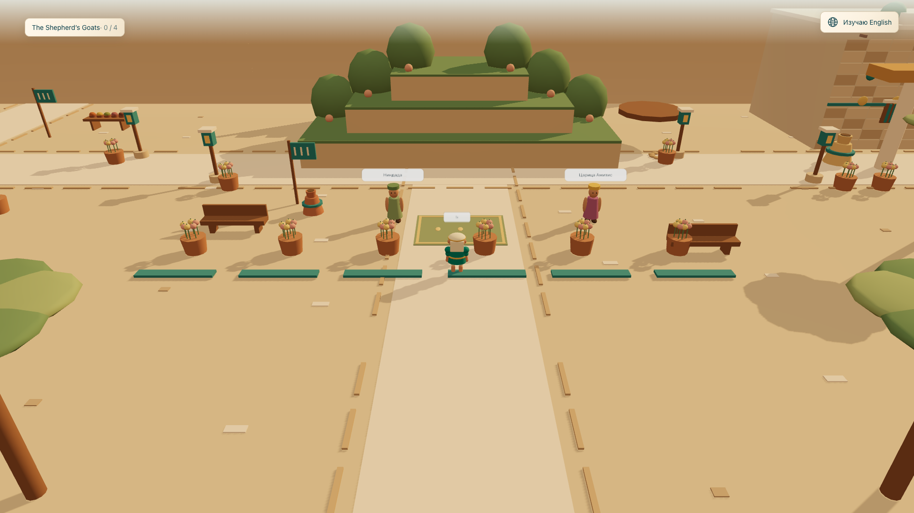
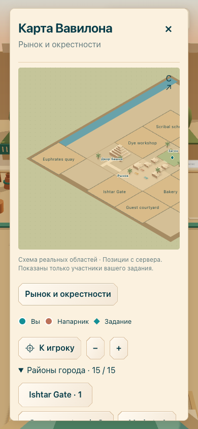

Обход компактного города Ровно 7 снимков. Все 15 районов посещены обычными WASD-командами на настоящем локальном сервере; координаты сверены с SQLite. Это журнал проверки, включая найденные дефекты.
Маршрут и авторитетные координаты . Автоматические screenshot, trace и video отключены.

1. Рынок. Существующая геометрия сохранена. 
2. Мельница: жернова, ослик, мешки, корзины, весы, таблички и детали фасадов. 
3. Жилой квартал. В исходном кадре виден декоративный горизонт внутри города — дефект исправлен. 
4. Сады до исправления: декоративные горы перекрывали камеру. Сохранено как свидетельство дефекта. 
5. Красильня до исправления горизонта: чаны, ткань, ткацкий станок и сосуды. 
6. Сады после переноса декоративных гор за северную границу. Камера и проход свободны. 
7. Карта 390×844 до исправления обрезки общего обзора. После исправления размеры проверены в браузере на 390 и 1920 px без нового снимка.